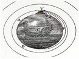
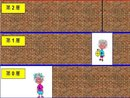
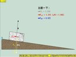

古典力學
 |
賽車模型_Car Race Model 模擬一台領先、有著固定速度的車和一台有著等加速度的車相比賽的古典物理運動情形。 |
翻譯:周冠言 |
|  |
牛頓山模型_Newton's Mountain Model 模擬一個拋射物從一個地球相當高的山上射出的運動情形。 |
翻譯:吳威正 |
|  |
電梯裡的相對運動_Relative Motion on an Elevator 電梯裡的相對運動模型展示了古典物理學中兩個觀察者所看到的相對運動。 |
翻譯:周柏毅 |
|  |
斜面下滑模型_Sliding Down an Inclined Plane 斜面下滑模型模擬了一個石塊在斜面上的下滑情形。 |
翻譯:盧廷一 |
 |
二維空投模型_Two Dimensional Air Drop Model 二維空投模型中，一架紅十字會的飛機計畫要空投補給物資到一座小島上。作為該架飛機的機長，你必須要在適當的時刻空投物資以避免掉落到海中。 |
翻譯:張祐維 |
 |
向量相加模型_Vector Addition Model 在向量相加模型中，使用者可以練習在二維平面裡的向量加法。 |
翻譯:周柏毅 |
 |
向量與分量模型_Vector Components Model 在這向量與分量模型中，使用者可以將一個向量分解成它的分量，並練習由分量找出該向量的大小以及方向。 |
翻譯:周冠言 |